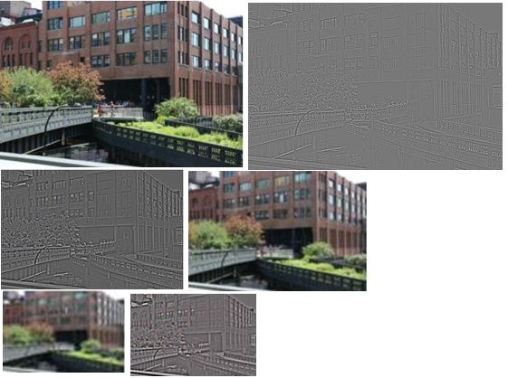
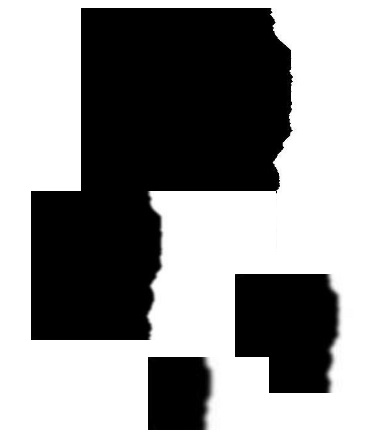
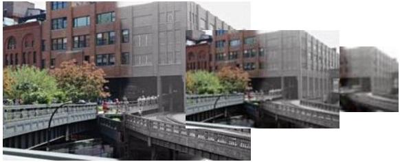
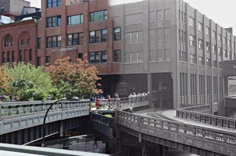

Problem Statement
The objectives of this project are to composite and blend two images of the same scene at different times in history by taking approximately half of the space from each input image. - The key components of this project include: - Take two images of same scene at different times as inputs. - Perform histogram equalization on input images to produce higher contrast on input images. - Construct Laplacian Pyramid for the two input images. - Find least noticeable seams in the middle 20% pixels of one of the input images. - Construct Gaussian Pyramid ouput matte with least noticeable seams found. - Normalize Laplacian and Gaussian Pyramids. - Construct output Laplacian Pyramid from the Laplacian Pyramid of the two input images. - Collapse the combined Laplacian Pyramid.
Methods
Laplacian Pyramid Blending
Building Laplacian Pyramid
Creating the Blending Matte
Combining the Laplacian Pyramid
Collapsing the Laplacian Pyramid
